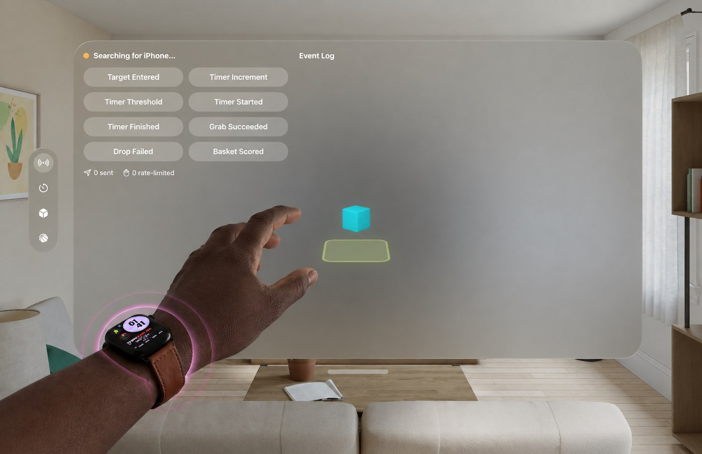
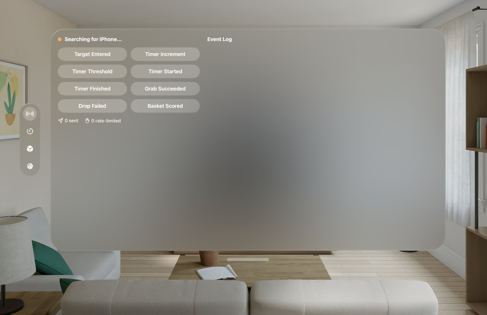
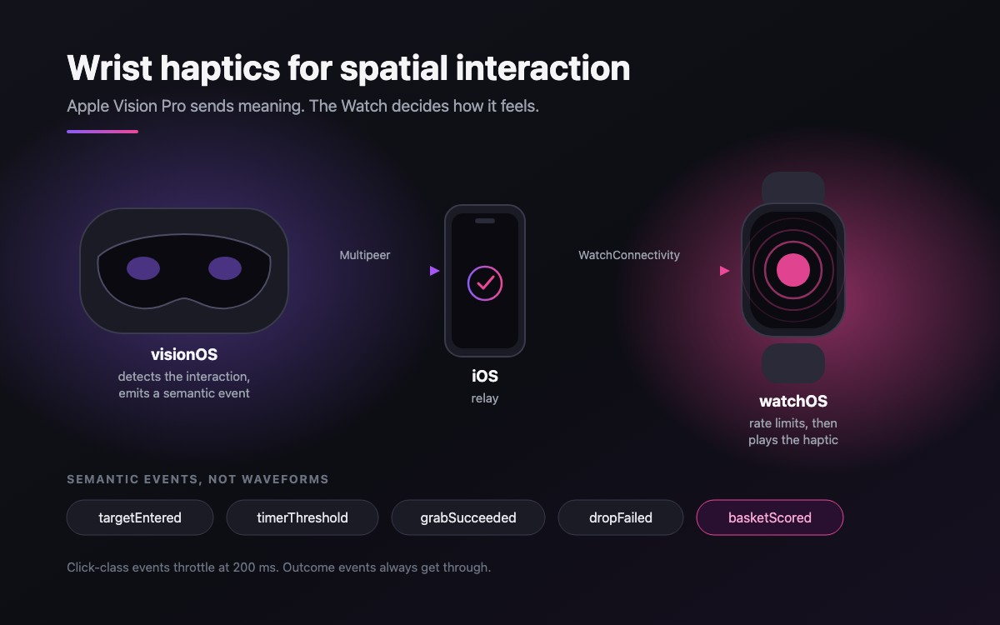
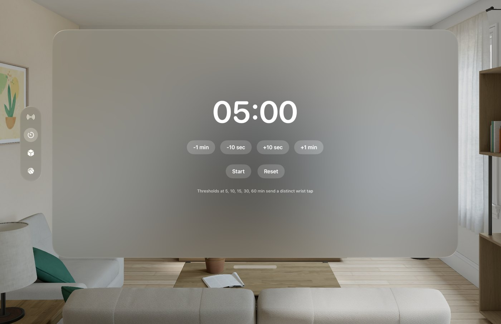
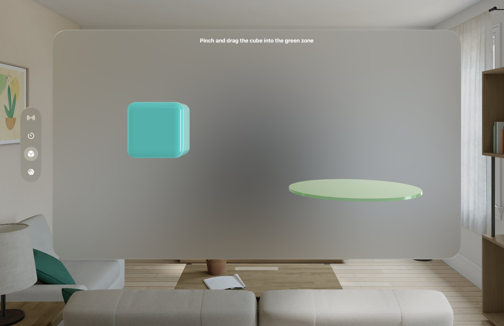
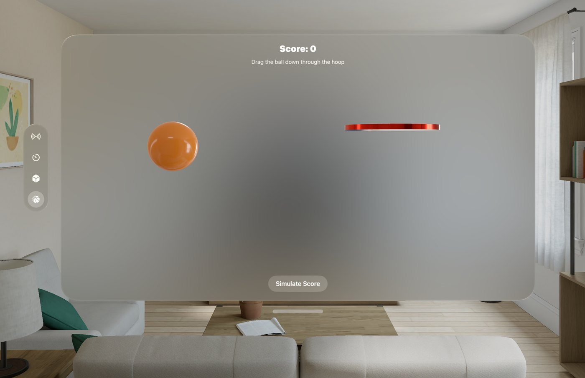

Where this started
My undergrad capstone was a pair of haptic VR gloves. We called them Magic Mitts: flex sensors for tracking, and an electromagnetic braking system that physically stops your hand when it reaches the surface of a virtual object, so you can feel yourself grasp something that is not there. Under fifty dollars of parts. It won first place at UTSA.
I spent a long time on that problem, and I came out of it convinced that touch is the sense we underuse in immersive systems. So when I started spending time with Vision Pro, the thing I kept circling was that it has no controllers and no gloves. Nothing in your hands at all.
And I did not want to fix that by adding something. The whole appeal of Vision Pro is that it is just the headset. The moment you tell someone they also need to strap on a peripheral to get feedback, you have taken away the thing that makes it feel light, and you have added one more device to charge, one more thing to put on, one more barrier for anyone who finds putting things on their hands difficult in the first place.
That constraint is the part I keep coming back to across my work. Make it natural. Make it work with what a person already has and already does, rather than asking them to adapt to the machine.
Which reframed the question entirely. Not "how do I give Vision Pro haptics," but: the parts are already here. The Apple Watch has an excellent haptic engine and it is already on the wrist of a huge number of the people who would put on this headset. It is already paired to their phone. Nobody has to buy, charge, or wear anything new.
What happens if the feedback device is one somebody is already wearing?
The problem with looking
Spatial interfaces communicate state visually almost exclusively. An object highlights when your focus enters it. A timer shows a number. A success message appears. Each of those is a perfectly good signal, and each of them has the same failure mode: it requires you to be looking at the thing at the moment it changes.
Which, in a spatial interface, is exactly when you often are not. You are visually busy. You are looking at your hand, or past the object, or at something else in the room. You are moving fast and interacting faster than you can visually confirm. In a headset your visual attention is the scarcest resource in the system, and we keep spending it on confirmations.
Touch does not have that problem. You do not have to aim your skin at something.
Send meaning, not waveforms
The core architectural decision, and the one I would defend hardest, is that the Vision Pro app never says what the Watch should feel like. It says what happened.
There are eight semantic events in the vocabulary: a focus entering an interactive object, a timer incrementing, a timer crossing a major threshold, a timer starting, a timer finishing, a grab succeeding, a drop failing, and a basket being scored. The visionOS layer emits one of those. The Watch owns the entire question of how each one should feel.
That split matters more than it looks. It means the haptic vocabulary can be retuned, or completely rewritten, without touching the spatial app at all. It means the same event can feel different on different hardware. And during a study, it means I can change what a success feels like between participants without changing a line of interaction code, which is the whole point of building it as a research prototype rather than a demo.

The chain
Three apps, in a line. visionOS detects the interaction and produces a semantic event. An iPhone sits in the middle as a relay, because the headset does not talk to the Watch directly, and passes the event along over WatchConnectivity. The Watch receives it, applies its rate limits, and plays a system haptic.

The rate limiting is the design
Apple already solved the hard part here, and it is worth being clear about that. The Watch has an excellent haptic engine, and more importantly its vocabulary is already legible to people. We all already understand a small tap for every increment of a value, the way a timer picker on your phone clicks as you spin it past each minute. Nobody needs that explained.
What breaks is quantity. A spatial interface can fire a focus-entered event dozens of times a second while your hand drifts across a boundary, and if every one of those becomes a tap, the Watch turns into a wasp. Good taps, far too many of them.
So there is a shared throttle, and the important part is that it is not uniform. Events are split into two classes.
- Click-class events get throttled. Focus entering a target and timer increments are repeatable by nature. Clicks are limited to one every 200 ms, and re-entering a target has its own 300 ms cooldown on top of that.
- Outcome events always pass. A grab succeeding, a drop failing, a threshold being crossed, a timer finishing, a basket scoring. These are things that happened once and matter. They bypass the throttle entirely.
That distinction is the actual product thinking in this project. A confirmation you can miss is only annoying. An outcome you miss is a bug. So the system is allowed to drop the former and never the latter.
The limiter is shared code that runs in two places: on the Watch, where it is authoritative, and on visionOS, where it exists purely to avoid flooding the link with events that are going to be discarded anyway.
Three scenarios to feel
Alongside the debug panel above, which is a harness rather than an experience, there are three built scenarios. Each produces a genuinely different kind of event, so the vocabulary gets exercised rather than just demonstrated.



The part I keep thinking about
Building this made me notice something about feedback generally, and it lands on biomimicry, which is where a lot of my thinking ends up. Anyone who has worked with me knows I will get there eventually.
Proprioception, the sense that tells you where your own hand is without looking at it, is doing constant, silent, unglamorous confirmation work. You do not notice it until it is gone. Nobody has ever thought "what a satisfying proprioceptive response" while picking up a cup. The feedback is good precisely because it does not ask for attention.
That is a hard standard for an interface, because every incentive pushes the other way. A haptic that announces itself demos well. A haptic that quietly keeps you oriented does not demo at all. But the second one is what a body actually does, and I think it is the right target.
Which is also why the Watch decides how things feel rather than the headset. In a body, the limb reports its own state. It does not wait for the brain to specify a waveform.
Status and what I would test
This is a working research prototype, not a shipping app, and it was scoped that way on purpose. It is not a production timer, it does not do continuous frame-by-frame vibration from hand tracking, it does not build custom haptic waveforms, and it does not do multi-user anything.
What I want to find out with it:
- Which spatial events actually benefit from tactile confirmation, and which ones are just noise on the wrist. My guess is that outcomes benefit far more than encounters, but that is a guess and the prototype exists to check it.
- Whether the 200 ms throttle is anywhere near right. It is a starting number, not a finding. It may well be too aggressive for slow deliberate interactions and too permissive for fast ones, in which case it should adapt to interaction speed rather than being fixed.
- Whether people can distinguish the semantic events from each other at all without being told, or whether the vocabulary needs to be much smaller than eight.
- Whether the wrist is even the right place. It is the convenient place, because that is where the hardware already is, and convenient and correct are not the same thing.